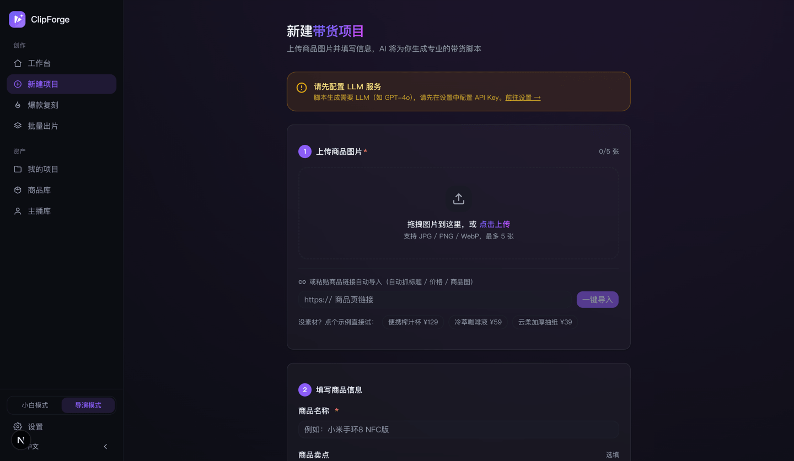

Hướng dẫn sử dụng ClipForge: từ cài đặt đến video bán hàng AI đầu tiên
Nói ngắn gọn: cài xong 3 phút, 0 đồng là có video bán hàng đầu tiên không watermark. ClipForge là công cụ mã nguồn mở (AGPL-3.0) làm video ngắn bán hàng bằng AI — tải ảnh sản phẩm hoặc nói một câu chủ đề, AI viết kịch bản, ghép hình, lồng tiếng, dựng video dọc hoàn chỉnh. Tài liệu này bao quát toàn bộ quy trình cài đặt, ra video miễn phí, video AI, hình thức bán hàng, hai chế độ, sao chép video viral, làm hàng loạt và đăng tuân thủ; giao diện song ngữ dùng chung.
🧑🎓 Trang này là bản tóm tắt. Muốn bản minh họa đầy đủ «bấm vào đâu ở từng bước, lỗi thì sửa thế nào», hãy xem hướng dẫn cho người mới (tiếng Anh) trên GitHub.
1. Cài đặt: chọn một trong ba cách
Cách 1: Bản desktop (đơn giản nhất)
Vào GitHub Releases tải bản macOS .dmg / Windows .exe / Linux .AppImage (gói Linux có từ v0.8.90), nhấp đúp là dùng, toàn bộ dữ liệu lưu trên máy.
Cách 2: Docker một dòng lệnh
docker run -d -p 3000:3000 -v clipforge-data:/data ghcr.io/xixihhhh/clipforge:latestMở http://localhost:3000 là xong.
Cách 3: Chạy từ mã nguồn (cho lập trình viên)
git clone https://github.com/xixihhhh/clipforge.git
cd clipforge && pnpm install && pnpm devChạy từ mã nguồn cần cài sẵn FFmpeg (luồng dựng miễn phí dùng nó để ra video, brew install ffmpeg / apt install ffmpeg); bản desktop và image Docker đã tích hợp sẵn, không cần tự cài). Mã nguồn bắt buộc dùng pnpm, dùng npm install sẽ báo lỗi.
Cài xong không mở được? Hãy vượt qua chặn của hệ thống (không phải virus, chỉ là ứng dụng chưa mua chứng chỉ ký)
- macOS «Không thể xác minh nhà phát triển»: trong «Applications» nhấp chuột phải ClipForge → «Open», rồi bấm «Open» lần nữa — chỉ cần một lần. Nếu báo «đã hỏng», chạy trong Terminal
xattr -cr /Applications/ClipForge.app. - Windows «Windows protected your PC»: bấm «More info» → «Run anyway».
- Linux AppImage nhấp đúp không phản hồi:
chmod +x ClipForge-*.AppImagerồi chạy lại.
Cài xong chưa? Tự kiểm tra trong hai giây
Bản web/Docker mở http://localhost:3000/api/health, thấy "status": "ok" là thành công; bản desktop vào «Cài đặt → Chẩn đoán hệ thống → Xem thông tin chẩn đoán». Hai chỗ này không chứa khóa bí mật nào, khi báo lỗi có thể chụp màn hình gửi luôn.
2. Ra video đầu tiên trong 3 phút: dựng nhanh miễn phí (0 đồng)
Mở bàn làm việc, bạn chỉ cần trả lời hai câu hỏi — nhập gì và ra video thế nào:
- Đưa sản phẩm vào: tải ảnh sản phẩm (tối đa 5 ảnh), dán link sản phẩm (tự lấy tiêu đề/giá/ảnh chính), hoặc bấm «Một câu ra video» rồi nói chủ đề, ví dụ «3 món đồ nhỏ giúp phòng trọ sang hơn». Không có tư liệu? Bấm sản phẩm mẫu để thử ngay.
- Cách ra video giữ mặc định «🆓 Dựng nhanh miễn phí»: ghép tư liệu thật từ kho hình + lồng tiếng AI miễn phí, toàn bộ ¥0, khoảng 2 phút.
- Bấm «Bắt đầu tạo» — viết kịch bản → ghép hình từ kho miễn phí → lồng tiếng và dựng, một thẻ tiến độ lo trọn, xong vào thẳng trang video để tải về.

Điều kiện duy nhất: viết kịch bản cần một LLM Key (nền tảng nào theo chuẩn OpenAI cũng được, DeepSeek mỗi lần khoảng ¥0.001; khuyên dùng Atlas Cloud, một Key đủ dùng cả cho tạo bằng AI về sau). Lần đầu bấm tạo, trang sẽ hướng dẫn dán Key ngay tại chỗ, không phải vào cài đặt.
3. Thêm một Key, mở khóa tạo bằng AI
ClipForge là công cụ mã nguồn mở BYOK (tự mang Key): phần mềm luôn miễn phí, mức dùng AI trả theo giây cho nền tảng mô hình bạn chọn, chúng tôi không cộng thêm, không ăn chia. Một giao diện gom 7 nền tảng lớn, hơn 30 mô hình:
- Atlas Cloud (khuyên dùng): một Key cho kịch bản + tạo ảnh (GPT Image 2) + video (toàn bộ dòng Seedance 2.5/2.0) + lồng tiếng, dán vào Cài đặt → Key nền tảng là xong;
- cũng hỗ trợ Volcengine Ark, fal.ai, OpenAI, DeepSeek..., trong Cài đặt → Mô hình tạo ảnh / Mô hình video chọn mỗi loại một mô hình mặc định là được;
- danh sách mô hình tự cập nhật khi chạy, mô hình mới lên kệ là dùng được, còn có thể thêm ID mô hình tùy chỉnh.
4. Dựng nhanh miễn phí hay video AI: chọn thế nào
| 🆓 Dựng nhanh miễn phí | ✨ Video tạo bằng AI | |
|---|---|---|
| Nguồn hình ảnh | Ghép tư liệu thật từ kho hình miễn phí | AI tạo hình và nhân vật nói theo từng phân cảnh |
| Chi phí | ¥0 (lồng tiếng/tư liệu/dựng đều miễn phí) | Tính theo giây: cả video 12 giây đo thực tế khoảng ¥26 (Seedance 2.5); gói rẻ khoảng ¥2~5/video |
| Thời gian | Khoảng 2~3 phút | Khoảng 4~8 phút |
| Phù hợp | Review chủ đề, đăng hằng ngày số lượng lớn, dùng thử trước | Sản phẩm lên hình, người thật nói, cần chất lượng cao |
| Key cần có | Chỉ LLM (viết kịch bản) | LLM + mô hình tạo ảnh + video |
Gói AI chỉ tốn tiền ở một cú bấm: kịch bản tạo miễn phí rồi dừng ở trang «Kịch bản xong», đọc lời thoại, xác nhận ổn rồi bấm «Tạo video AI» mới bắt đầu tính phí — tự chạy lưới 9 khung phân cảnh (tạo ảnh một lần khóa cứng nhân vật/căn phòng/ánh sáng của mọi cảnh) → tạo cả video một chạm (Seedance 2.5 tự chuyển cảnh, lời thoại do giọng gốc nhân vật nói đúng từng chữ) → vào thẳng trang video.

5. Hình thức bán hàng và kho người dẫn
Chọn gói AI rồi chọn tiếp hình thức bán hàng (gói miễn phí không cần chọn — ghép tư liệu chung nên chọn cũng không có tác dụng):
- Gợi ý thông minh (mặc định): AI chọn phong cách theo sản phẩm, chủ yếu trình diễn sản phẩm thật;
- Người thật nói: người thường do AI tạo nói trước ống kính để review, tích hợp quy tắc chân thực (lời nói đời thường, nền có dấu vết sinh hoạt, nhịp hành động), không ra khuôn mặt hot girl «nhìn là biết giả»;
- Tiểu phẩm tình huống: tiểu phẩm review có nhân vật có cốt truyện, nhiều vai mỗi vai một giọng riêng;
- Ghép ảnh chữ: dựng nhanh ảnh và chữ khớp nhịp.
Khi chọn người thật nói/tiểu phẩm tình huống có thể chỉ định người dẫn lên hình: tự tạo hình tượng trong «Kho người dẫn», một chạm tạo ảnh định trang bốn góc chính diện/nghiêng/sau lưng/cận cảnh (tạo một lần đảm bảo là cùng một người), sau đó lưới 9 khung và cả video đều lấy ảnh định trang làm mốc nhận dạng — không đổi mặt qua các cảnh, các video.
6. Chế độ cơ bản và chế độ đạo diễn
Chuyển đổi một chạm ở cuối thanh bên:
- Chế độ cơ bản (mặc định): chỉ có một luồng sáng tạo ở bàn làm việc, từ kịch bản đến video lo trọn, không thấy phân cảnh hay thuật ngữ;
- Chế độ đạo diễn: mở khóa toàn bộ công cụ chuyên nghiệp — sửa từng phân cảnh, hội đồng giám khảo (bốn giám khảo khó tính mổ xẻ lời thoại và viết lại giữ nguyên độ dài), chuyển động máy theo từng cảnh (18 preset + chồng Mix), Look hình ảnh, lưới 9 khung, tạo cả video một chạm, tạo mới nâng cao (ngành hàng/đối tượng/nền tảng/391 mẫu video chỉnh từng mục), ma trận biến thể A/B.

6.B. Phân tích tư liệu và bảng điều khiển sản xuất (chế độ đạo diễn, v0.9.1)
Hai công cụ này phù hợp với người sáng tạo cần kiểm soát chi phí, giữ nhất quán qua các cảnh hoặc lặp lại nhiều phiên bản, không làm phiền luồng ra video một chạm mặc định.
- Phân tích tư liệu trước: từ thanh bên vào «Phân tích tư liệu», tải lên ảnh hoặc video bất kỳ. Hệ thống nhận diện chủ thể, ánh sáng, màu sắc, bố cục, ngôn ngữ ống kính và nhịp, tạo prompt dùng tiếp được; chọn dự án rồi có thể lưu ngay thành nhận định của dự án.
- Xây trí nhớ hình ảnh cho dự án: ở trang tư liệu dự án vào «Bảng điều khiển sản xuất», điền chủ thể chính, hành động, bối cảnh, ngôn ngữ ống kính, cùng các mốc nhân vật / sản phẩm / trang phục và những điều cấm thay đổi. Chúng được đưa vào yêu cầu tạo ảnh và ảnh thành video thật, không chỉ là ghi chú.
- Nhìn rõ quy trình và chi phí: bảng điều khiển hiển thị quy trình chín giai đoạn, nơi thực thi và có tính phí hay không ở từng giai đoạn; chi phí hiển thị theo khoảng dựa trên danh mục mô hình hiện tại, giá chưa biết không bị giả làm con số chính xác. Có thể áp dụng mô hình đề xuất theo cân bằng, chi phí thấp, tốc độ, chất lượng hoặc tính nhất quán.
- Cho mô hình đúng tham chiếu: tạo theo từng cảnh sẽ tự kết hợp khung hình chính, ảnh định trang nhân vật, ảnh gốc sản phẩm và khung cuối thật của cảnh trước, rồi chọn đường đa tham chiếu hoặc khung đầu-cuối theo năng lực mô hình hiện tại. Khi hỗ trợ âm thanh gốc, cùng một lần tạo sẽ gắn lời thoại từng chữ, khẩu hình, âm thanh môi trường và âm thanh vật thể; đầu vào không được hỗ trợ sẽ được hạ cấp trước khi gửi, không thử sai bằng tham số lỗi để rồi bị trừ tiền.
- Nghiệm thu chất lượng từng cảnh: lần tạo mới không ghi đè ứng viên cũ. Mở «Cổng chất lượng cảnh quay», có thể cho mô hình thị giác kiểm tra từng chiều: chất lượng hình, thời gian video, bám phân cảnh, giữ nhân vật / sản phẩm, quan hệ hành động, liên tục giữa các cảnh và nhãn chữ; video được trích nhiều khung theo cảnh, lỗi kèm mốc thời gian cụ thể. Máy chỉ cho điểm, độ tin cậy và bằng chứng kiểm chứng được, bạn quyết định dùng hay không.
- Chỉ sửa đoạn thời gian bị hỏng: dưới ứng viên video đã đánh giá, mở «Sửa chính xác». Hệ thống đề xuất khoảng bắt đầu-kết thúc theo mốc lỗi, bạn cũng có thể chỉnh tay và thêm mốc thời gian về nhân vật, sản phẩm, bố cục hoặc tính liên tục. Trước tiên tạo bản chạy thử miễn phí, đối chiếu cửa sổ sửa thực tế, thời lượng tính phí của mô hình, chi phí, số tham chiếu và ghi chú hạ cấp; chỉ gửi đi sau khi tích xác nhận chi phí. Kết quả sửa chỉ thay đúng đoạn thời gian đó, âm thanh cảnh gốc và ứng viên cũ đều được giữ, nếu máy chủ đã xong nhưng ghép nối trên máy bị gián đoạn thì có thể hoàn tất tiếp ở trang tư liệu.
- Xem trước, snapshot và sửa lỗi: tạo snapshot để lưu quan hệ kịch bản/tư liệu/video hiện tại; «Xem trước nhanh» dùng mức 720p / veryfast trên máy, không tạo lại tư liệu AI; sau khi có video chạy QC, lỗi dựng miễn phí có thể xác nhận rồi một chạm tạo bản sửa và kiểm lại, cảnh cần làm lại có tính phí chỉ đưa ra kế hoạch, không tự trừ tiền.
- Kiểm tra điểm cắt và làm bản master: trong «Tính liên tục và bản master» của bảng điều khiển sản xuất, bấm phân tích trước. Hệ thống đọc điểm cắt thật trên timeline (video cũ thì tự phát hiện cảnh), so sánh độ sáng, sắc độ và độ bão hòa trước và sau điểm cắt, đồng thời đo độ lớn âm thanh cả video; chỉ khi có rủi ro mới mở ra các mốc thời gian cụ thể. Phân tích không gọi mô hình, không sửa video. Khi cần có thể chủ động chọn chuẩn hóa độ lớn âm thanh hai lượt; chỉ bật khử nhấp nháy khi xác nhận thật sự có nhấp nháy theo thời gian, vì nó sẽ mã hóa lại hình. Kết quả xử lý luôn được lưu thành phiên bản video mới.
Chỉ có hiệu lực khi được chọn dùng: ứng viên được chọn thủ công sẽ trở thành tư liệu dựng thực tế của phân cảnh đó; ứng viên cũ vẫn được giữ, có thể so sánh hoặc chuyển lại bất cứ lúc nào. Điểm nghiệm thu thật trong dự án sẽ tham gia đề xuất mô hình khi đủ mẫu, nhưng việc tạo lại và đổi mô hình mãi mãi chỉ là đề xuất, không tự trừ tiền.
6.C. Bàn làm việc đoạn cắt và cắt theo văn bản hàng loạt (v0.9.2)
- Ở trang tư liệu dự án bấm «Cắt video theo văn bản», nhập MP4 / MOV / WebM / MKV / M4V (tối đa 1GB).
- Chọn Tiny (nhẹ), Base (cân bằng) hoặc Small (thử nghiệm) để bắt đầu chép lời trên máy. Tư liệu dài tối đa 2 giờ được xử lý theo khối 5 phút, bộ nhớ không tăng theo thời lượng; có thể hủy bất cứ lúc nào và tiếp tục từ điểm kiểm tra gần nhất, bản cũ vẫn dùng được cho đến khi bản mới xong. Mô hình được lưu cache sau lần tải đầu; ưu tiên WebGPU, không hỗ trợ thì tự chuyển chế độ tương thích.
- Bàn làm việc đoạn cắt hỗ trợ tìm đoạn theo câu nói gốc và thời lượng mục tiêu, nghe thử rồi chọn dùng, cũng có thể nhập khoảng thời gian thủ công. Bản chép lời dài hiển thị theo đoạn, hỗ trợ tìm toàn văn và định vị chỗ đang phát; «Hiệu đính phụ đề» sửa được cụm từ như tên sản phẩm, lưu theo phiên bản.
- Chọn nhiều để xuất hàng loạt: đặt tên cho tối đa 12 đoạn, chạy thử thời lượng từng đoạn rồi đưa vào hàng đợi. Thẻ phiên bản hiển thị tiến độ, có thể hủy riêng và thử lại theo kế hoạch ban đầu; khi dịch vụ gián đoạn vẫn giữ snapshot bản chép lời, trung tâm tác vụ có thể quay về đúng tư liệu.
- Bấm vào chữ để chuyển giữ / xóa, cũng có thể đánh dấu hàng loạt từ đệm và khoảng lặng. Khi phát sẽ tự bỏ qua đoạn đã xóa; timeline, thời lượng dự kiến, hoàn tác / làm lại đều tức thì.
- Bấm trước «Xem trước thay đổi» để kiểm tra từ đã xóa, khoảng thời gian và thời lượng rút ngắn, rồi xác nhận tạo phiên bản mới. SRT / VTT / JSON giao ngay phụ đề và kế hoạch; OTIO giữ các đoạn âm thanh-hình ảnh có thể sửa, EDL hợp với phần mềm dựng truyền thống, CSV có timecode nguồn/thành phẩm và chữ từng đoạn để duyệt. MCP / CLI cũng hỗ trợ xuất.
Liên kết lại tư liệu: timeline chuyên nghiệp chỉ ghi tên tệp gốc, không ghi đường dẫn tuyệt đối trên máy. Sau khi nhập vào Premiere, Resolve hoặc phần mềm dựng khác, chọn tư liệu theo tên tệp gốc một lần là liên kết lại được.
6.D. Kho tư liệu trên máy (v0.9.3)
- Ở trang tư liệu mở «Kho tư liệu trên máy», mỗi lần tải lên tối đa 12 ảnh hoặc video, mỗi tệp không quá 80MB. Hỗ trợ MP4 / WebM / MOV / M4V / JPG / PNG / WebP.
- Khi tải lên hiển thị tiến độ và trạng thái kiểm tra tệp, có thể hủy hoặc chỉ thử lại mục chưa xong; nội dung trùng sẽ dùng lại tệp có sẵn, giữ tên và thẻ đã sửa.
- Tìm theo tên hoặc thẻ, lọc theo ảnh/video, sắp xếp theo thời gian tải lên hoặc tên. Xem trước rồi chọn phân cảnh và bấm «Dùng cho cảnh này», phiên bản cũ vẫn chuyển lại được ở bàn chất lượng.
- «Dùng tư liệu trên máy lấp cảnh trống» chỉ đọc tư liệu của dự án này, không gọi mô hình hay nguồn tư liệu trực tuyến. Tư liệu đã chọn đã xong hoặc đang xử lý và cảnh dùng ảnh gốc sản phẩm sẽ được bỏ qua; bản ghi lỗi và phiên bản cũ chưa chọn không chặn việc lấp.
7. Sao chép video viral và chọn chủ đề hot
- Sao chép video viral: tải lên một video viral tham khảo, phân tích điểm cắt cảnh và nhịp, dùng sản phẩm của bạn tạo lại video cùng cấu trúc; cũng hỗ trợ reference-to-video ở cấp mô hình để đổi sản phẩm sao chép trực tiếp (chú ý bản quyền tư liệu, tự chịu rủi ro);
- Hôm nay đăng gì: bảng xu hướng ở bàn làm việc lấy tìm kiếm hot Douyin theo thời gian thực (đã lọc nội dung chính trị thời sự), bấm chủ đề hot là viết thành video, mỗi mục có nút «Làm tương tự» để sao chép ngay;
- Đăng hằng ngày theo persona: điền từ khóa persona để tự chọn chủ đề, kết hợp cron + CLI là thành cỗ máy đăng hằng ngày tự động.
8. Làm hàng loạt / MCP / CLI
- Làm video hàng loạt (chế độ đạo diễn): trước đợt sale lớn, một chạm xếp hàng 10 sản phẩm để ra video;
- MCP Server: trong agent như Claude / Cursor kết nối
clipforge-mcp, dán link sản phẩm, một câu ra video; - CLI:
node bin/clipforge.mjs create --topic "..."ra video bằng script, hợp với tác vụ hẹn giờ.

9. Xuất và đăng tuân thủ
- Trang video tải thẳng MP4 1080p không watermark; một chạm chuyển quy cách Douyin 9:16 / Xiaohongshu 3:4..., kèm gói tiêu đề/hashtag/chữ ảnh bìa;
- Bật tuân thủ mặc định: tự gắn nhãn AIGC ẩn (theo tiêu chuẩn quốc gia GB 45438-2025) + mặc định in góc nhãn hiển thị «Tạo bằng AI»;
- Trước khi đăng tự kiểm tra rủi ro bóp tương tác: kiểm tra lần lượt từ rủi ro, câu mở đầu, thời lượng, phụ đề, CTA và đưa cách sửa; quét từ cấm theo luật quảng cáo kèm gợi ý thay thế.

10. Gặp sự cố thì làm gì (bảng tự tra lỗi)
| Triệu chứng | Thường là do | Cách sửa |
|---|---|---|
| «Chưa cấu hình LLM, vui lòng vào cài đặt điền API Key» | Chưa thêm Key viết kịch bản | Cài đặt → «Mô hình kịch bản» bấm preset nhanh + điền Key, bấm «Kiểm tra kết nối» |
| Kiểm tra kết nối thất bại / 401 | Key sai hoặc có khoảng trắng | Sao chép dán lại; 402 là nền tảng hết số dư, 404 là sai tên mô hình (bấm «Đọc mô hình khả dụng» để chọn từ danh sách) |
| «Chưa cấu hình mô hình tạo ảnh/video» | Gói AI thiếu mô hình | Cài đặt → «Mô hình tạo ảnh» «Mô hình video» mỗi loại chọn một, hoặc dùng luôn một Key Atlas |
| Danh sách mô hình trống | Key của nền tảng đó chưa điền hoặc không hợp lệ | Điền Key ở «Key nền tảng» trước, danh sách mô hình sẽ tự hiện |
| Không lấy được thông tin từ link sản phẩm | Trang đó chống thu thập dữ liệu | Chuyển sang tạo dự án bằng «Tải ảnh sản phẩm» |
| Video không có tiếng | Lồng tiếng bị tắt | Trang video → «Lồng tiếng (TTS)» → bật «Bật lồng tiếng tự động» |
| Phụ đề thành ô vuông/lỗi font | Môi trường tự dựng thiếu font CJK | Dùng image Docker chính thức (đã có sẵn font phụ đề), hoặc cài font CJK cho hệ thống |
| Dựng thất bại, log nhắc đến drawtext | Bản FFmpeg thiếu filter drawtext | Dùng FFmpeg cài qua trình quản lý gói của hệ thống, đừng dùng bản static thiếu harfbuzz |
| Khởi động lại Docker thì mất hết dự án | Chưa gắn volume dữ liệu | khi run nhất định phải kèm -v clipforge-data:/data |
| Không mở được localhost:3000 | Cổng bị chiếm | PORT=3001 pnpm dev; Docker đổi thành -p 8080:3000 |
Danh sách xử lý lỗi dài hơn (gồm npm/pnpm, better-sqlite3, kẹt ở đang tạo...) xem mục 11 của hướng dẫn đầy đủ.
11. Dữ liệu lưu ở đâu, sao lưu thế nào
Dự án, ảnh sản phẩm, video đều nằm trên máy của bạn, không tải lên máy chủ nào:
- Bản desktop macOS:
~/Library/Application Support/ClipForge/data - Bản desktop Windows:
%APPDATA%\ClipForge\data; bản desktop Linux:~/.config/ClipForge/data - Chạy từ mã nguồn: trong thư mục dự án
data/; Docker: volume dữ liệuclipforge-data(trong container/data)
Trong thư mục có sqlite.db (cơ sở dữ liệu dự án), uploads/ (ảnh bạn tải lên), output/ (video). Sao lưu hoặc đổi máy: sao chép cả thư mục data đi là xong. Key lưu trong cài đặt trên máy, thông tin chẩn đoán và log đều không chứa khóa bí mật.
12. Câu hỏi thường gặp
Có ra video mà không tốn đồng nào được không?
Được. Gói dựng nhanh miễn phí = tư liệu miễn phí + lồng tiếng Edge TTS miễn phí + dựng FFmpeg trên máy, 1080p không watermark không giới hạn số video; chỉ bước viết kịch bản cần một LLM Key (DeepSeek mỗi lần khoảng ¥0.001).
Một video AI tốn bao nhiêu?
Tính theo giây, ghi trên lựa chọn: lưới 9 khung tạo ảnh một lần khoảng ¥1.3, Seedance 2.5 cả video 12 giây đo thực tế khoảng ¥26; đổi sang gói Mini khoảng ¥0.28/giây, một video 8 giây khoảng ¥2.2. Chỉ phát sinh chi phí khi bấm một lần sau khi xác nhận kịch bản, trả theo mức dùng cho nền tảng mô hình.
Người thật nói có cần quay người thật không?
Không cần, AI tạo người thường nói trước ống kính, giọng gốc nói đúng từng chữ, khớp khẩu hình; ảnh định trang trong kho người dẫn giữ nguyên khuôn mặt qua các video.
Tạo lỗi có mất tiền oan không?
Không. Luồng miễn phí thử lại thoải mái; luồng AI dùng bảng tác vụ hai giai đoạn, tác vụ đám mây đã gửi có thể khôi phục nhận lại ở trang tư liệu, không trừ tiền hai lần.
Dữ liệu lưu ở đâu?
Tất cả trên máy (SQLite + tệp cục bộ), không tải lên máy chủ nào; Docker tự triển khai cũng vậy.
Câu hỏi tài liệu chưa đề cập thì hỏi ở đâu?
Vào GitHub Issues hoặc Discussions, dùng tiếng Anh hay tiếng Việt đều được.
Ra ngay video đầu tiên
Miễn phí · mã nguồn mở · không watermark, không Key vẫn ra được cả video.